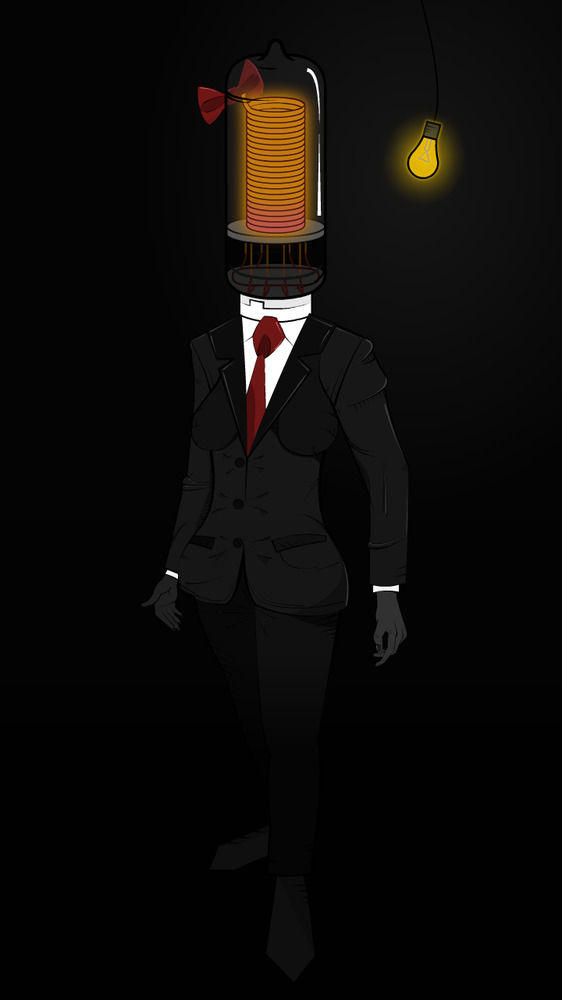
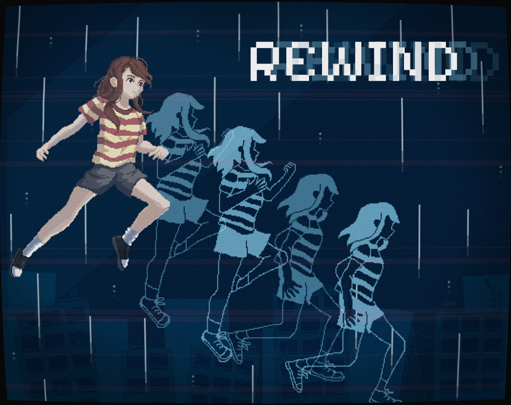
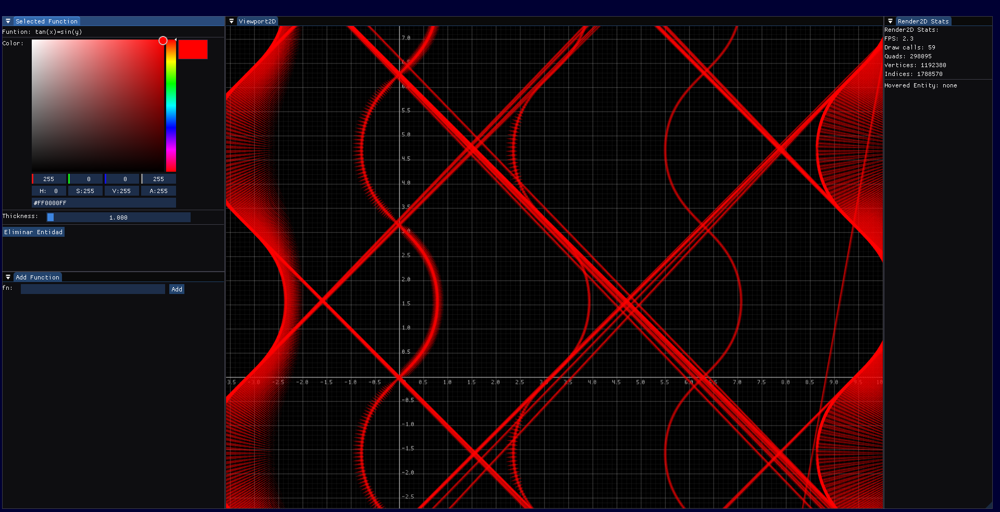

Diseño
¿Necesitas crear tu identidad de marca, promocionar tus productos, o simplemente un poco de arte? Mi experiencia abarca desde ilustraciones 2D, hasta la creación de modelos 3D.
Soy Valentín Dutruel, desarrollador y diseñador. Mi trabajo se centra en la creación de software con calidad, enfocado al usuario y su comodidad.
Abierto para trabajar · Colón, Entre Ríos, Argentina

Soy Valentín Dutruel, desarrollador y diseñador. Actualmente me encuentro estudiando la carrera Licenciatura en Sistemas de Información.
Mi interés se centra en la creación de software a medida, resuelto con soluciones creativas y fuera de la caja.
Mi mejor atributo es la curiosidad, siempre pendiente de aprender cosas nuevas para poder implementar en mi trabajo.
¿Necesitas crear tu identidad de marca, promocionar tus productos, o simplemente un poco de arte? Mi experiencia abarca desde ilustraciones 2D, hasta la creación de modelos 3D.
¿Buscas software que solucione tus problemas? Desde desarrollo web hasta aplicaciones de escritorio, puedo aportar las herramientas que hacen tu trabajo más sencillo.
¿Necesitas algo más? Ningún proyecto es igual a otro, por eso es importante incorporar personalidad a través de otros medios de creación.

Diseño de personaje realizado para la banda de rock indie “La Vaca”. La ilustración fue utilizada para promocionar su último lanzamiento.

Videojuego realizado en un mes como parte de la Tranki GameJam. Se exploran las dinámicas de trabajo en equipo bajo presión.

El proyecto más reciente en el que estoy trabajando. Un trabajo colaborativo para crear un graficador matemático didáctico.